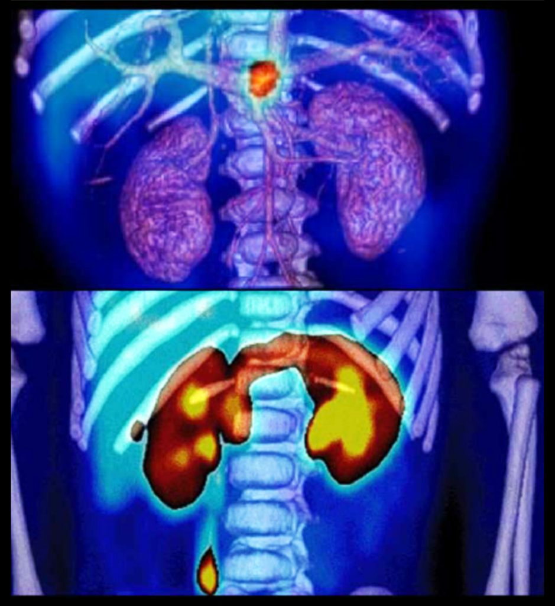

RESONANCIA MÁGNETICA (RM).
Proporciona imágenes corporales similares a las que se obtienen con la TC, pero la RM es mejor en la diferenciación de téjidos.
Moore , K .L ., y Daley , A .F(2013) .Anatomia con orientación clínica .Barcelona ,España. Lippincott Williams y Wilkins. Capítulo 1 . Introducción a la Anatomía con orientación clínica . 2-70